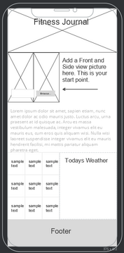
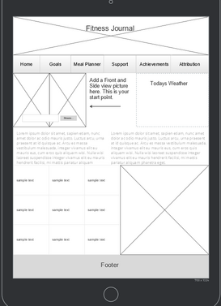
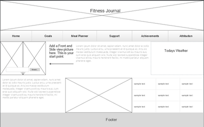

Purpose
The vision I have for this website is a personal fitness tracker and journal. I want a goal list (Todo App), the current weather (Weather API), Achievement Page (Gallery w/ CSS effects and utilizing a JSON module), a support system page with a contact info form and list the user can build as well as links to mental, emotional, and physical support programs, a banner with a new motivational quote each day, and a last visited date (Local Storage). There will be a meal planner page with a form with days of the week. On the main page, I will have a form for the user to add before front and side view pictures with placeholders.
Audience
The focus of this website is rather broad, although the main user base I see as being 16+ years of age. Anyone who is interested in tracking their progress and fitness should find this site useful. Parents can use it in support of children, Adults for their personal use or a support for a friend, etc.
Data Sources
- At least one API. I would like to have two, a weather API and a fitness API, although I will have to researh that
- A JSON module for the Achievements page. I like using JSON for lists that need to be updated regularly. It makes for a nice organized format.
- I will be using Local Storage to show the last visited date as a motivator.
- srcset will be used for pictures to maintain responsiveness.
- There may be additions to the Data Types as I develop the site over the next few weeks.
Module List
- Goal list functions with modules for utilities and local storage
- modules for the weather app with separate modules for current and forecast
- module supporting the gallery page
- module supporting the meal planner
- module supporting the achievements page
- Possible additions as needed
Wireframes
Small
Medium
Large
Colors/Typography/Styling
Colors
Typography
- Headings: Dancing Script, with backups of Rouge Script and cursive
- Body: Roboto, with backups of Open Sans and sans serif
Styling
Grid, Block, and Flex will be used where appropriate. I will be utilizing hover, before and after, transition, and there will be color changes on click events. There will be placeholders for images and lazy loading to improve page performance and responsiveness.
Schedule
- Week 9: Concept developed and Proposal written, as well as basic page framework built.
- Week 10: Research APIs that would apply. Build main and goals page. Add basic CSS for the site.
- Week 11: Build meal planner page. I anticipate this will be a heavy build, which is why I am giving it a week.
- Week 12: Build achievements and support pages.
- Week 13: Finish any left-over work and polish the site. The Attribution page will be a basic list of source links for pictures and APIs used, along with the site header, navbar, and footer.
- Week 14: Submit finished project.